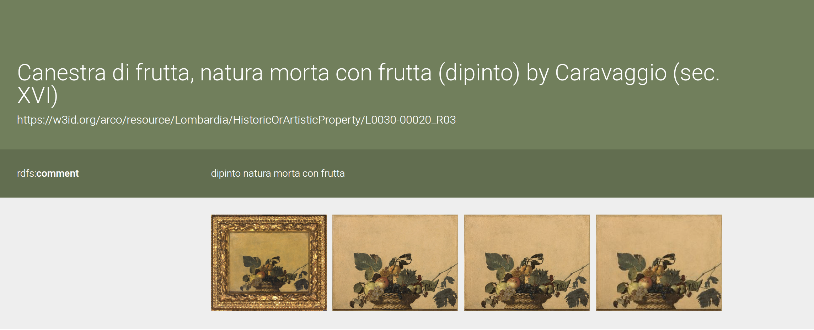

PREFIX arco: https://w3id.org/arco/ontology/arco/
PREFIX rdfs: http://www.w3.org/2000/01/rdf-schema#
SELECT DISTINCT ?painting ?label
WHERE {
?painting a arco:HistoricOrArtisticProperty ;
rdfs:label ?label .
FILTER(REGEX(?label, "Canestra di frutta", "i"))
}
LIMIT 100
Canestra di frutta
I’ve chosen the painting
"Canestra di frutta"
by Caravaggio and made a query to find it in the ArCo ontology.
The result:
View SPARQL query results

I got a lot of results containing the phrase "Canestra di frutta". It turned out that Caravaggio has other paintings featuring fruits as well ("Fanciullo con canestra di frutta"). So I decided to create another query to keep only the specific painting I needed.
PREFIX arco: https://w3id.org/arco/ontology/arco/
PREFIX rdfs: http://www.w3.org/2000/01/rdf-schema#
SELECT DISTINCT ?painting ?label
WHERE {
?painting a arco:HistoricOrArtisticProperty ;
rdfs:label ?label .
FILTER(STRSTARTS(LCASE(STR(?label)), "canestra di frutta"))
}

The refined query successfully returned the exact artwork I was looking for.
By replacing the regular expression filter with the
View the artwork record in the ArCo Knowledge Graph
STRSTARTS function,
I was able to narrow down the results and eliminate other artworks containing similar keywords in their titles.
The query identified the cultural heritage resource corresponding to Caravaggio’s Canestra di frutta,
confirming that the artwork is represented in the ArCo knowledge graph. This result demonstrates how SPARQL queries can be progressively refined to improve precision and retrieve a specific cultural heritage object from a large and complex ontology.
View the artwork record in the ArCo Knowledge Graph

IDENTIFYING THE GAPS AND CREATING NEW TRIPLES
First gap (RDF modeling gap — Author / contextual attribution)
During the analysis of the resource L0030-00020_R03, we identified a significant missing contextual modeling detail regarding the authorship of the cultural property. The resource refers to the artwork in a simplified manner and does not fully represent the author as a structured semantic entity within the knowledge graph. In many ArCo records, the author is either weakly modeled (e.g., only as a literal string in rdfs:label) or not explicitly connected to a dedicated Agent node with proper identity and reuse across other cultural heritage objects. This leads to a loss of semantic richness, since it becomes impossible to: link the author to other artworks in the graph, perform advanced SPARQL queries across the author’s production, integrate external linked open data sources such as Wikidata.
To enrich the Knowledge Graph, I use an LLM to extract and formalize the author information from the cultural heritage record. Instead of treating the author as a simple literal string, the model helps transform it into a structured semantic entity based on external Linked Open Data sources (Wikidata).
The LLM identifies and standardizes the author as:
Finally, I ask the LLM to convert this enriched information into RDF triples using the ArCo ontology:
- Michelangelo Merisi da Caravaggio (Wikidata entity: Q42207)
Finally, I ask the LLM to convert this enriched information into RDF triples using the ArCo ontology:
PREFIX arco: <https://w3id.org/arco/ontology/arco/>
PREFIX foaf: <http://xmlns.com/foaf/0.1/>
PREFIX rdfs: <http://www.w3.org/2000/01/rdf-schema#>
:Painting_L0030-00020_R03
a arco:HistoricOrArtisticProperty ;
arco:hasAuthor <https://www.wikidata.org/entity/Q42207> .
<https://www.wikidata.org/entity/Q42207>
a foaf:Person ;
rdfs:label "Michelangelo Merisi da Caravaggio" .